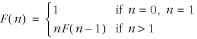
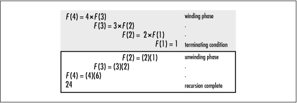
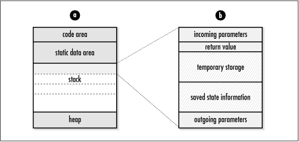
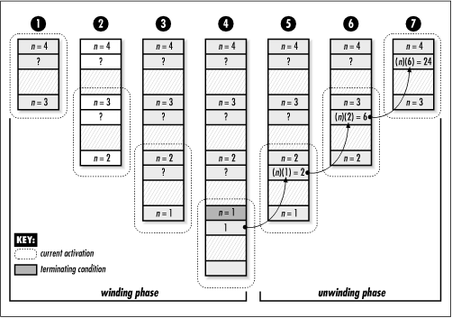

3.1 Basic Recursion
To begin, let's
consider a simple problem that normally we might not think of
in a recursive way. Suppose we would like to compute the
factorial of a number n. The factorial of n, written n!, is the product of all numbers
from n down to 1. For example,
4! = (4)(3)(2)(1). One way to calculate this is to loop
through each number and multiply it with the product of all
preceding numbers. This is an iterative approach, which can be
defined more formally as:
n! = (n)(n -
1)(n - 2) . . . (1)
Another way to look at this problem is to
define n! as the product of
smaller factorials. To do this, we define n! as n times the factorial of n - 1. Of course, solving (n - 1)! is the same problem as n!, only a little smaller. If we then
think of (n - 1)! as n - 1 times (n - 2)!, (n - 2)! as n - 2 times (n - 3)!, and so forth until n = 1, we end up computing n!. This is a recursive approach, which can be
defined more formally as:

Figure
3.1 illustrates computing 4! using the recursive approach
just described. It also delineates the two basic phases of a
recursive process: winding and unwinding. In the winding phase, each recursive
call perpetuates the recursion by making an additional
recursive call itself. The winding phase terminates when one
of the calls reaches a terminating
condition. A terminating condition defines the
state at which a recursive function should return instead of making another recursive
call. For example, in computing the factorial of n, the terminating conditions are
n = 1 and n = 0, for which the function simply
returns 1. Every recursive function must have at least one
terminating condition; otherwise, the winding phase never
terminates. Once the winding phase is complete, the process
enters the unwinding phase, in which
previous instances of the function are revisited in reverse
order. This phase continues until the original call returns,
at which point the recursive process is complete.

Example
3.1 presents a C function, fact, that accepts a number
n and computes its factorial recursively. The
function works as follows. If n is less than
0, the function returns 0, indicating an error. If
n is or 1, the function returns 1 because 0!
and 1! are both defined as 1. These are the terminating
conditions. Otherwise, the function returns the result of
n times the factorial of n -
1. The factorial of n - 1 is computed
recursively by calling fact
again, and so forth. Notice the similarities between this
implementation and the recursive definition shown earlier.
Example 3.1.
Implementation of a Function for Computing Factorials
Recursively /*****************************************************************************
* *
* -------------------------------- fact.c -------------------------------- *
* *
*****************************************************************************/
#include "fact.h"
/*****************************************************************************
* *
* --------------------------------- fact --------------------------------- *
* *
*****************************************************************************/
int fact(int n) {
/*****************************************************************************
* *
* Compute a factorial recursively. *
* *
*****************************************************************************/
if (n < 0)
return 0;
else if (n == 0)
return 1;
else if (n == 1)
return 1;
else
return n * fact(n - 1);
}
To understand how recursion really works, it
helps to look at the way functions are executed in C. For
this, we need to understand a little about the organization of
a C program in memory. Fundamentally,
a C program consists of four areas as it executes: a code
area, a static data area, a heap, and a stack (see Figure
3.2a). The code area contains the machine instructions
that are executed as the program runs. The static data area
contains data that persists throughout the life of the
program, such as global variables and static local variables.
The heap contains dynamically allocated storage, such as
memory allocated by malloc. The
stack
contains information about function calls. By convention, the
heap grows upward from one end of a program's memory, while
the stack grows downward from the other (but this may vary in
practice). Note that the term heap as it is used in this context
has nothing to do with the heap data structure presented in Chapter
10.
When a function is called in a C program, a
block of storage is allocated on the stack to keep track of
information associated with the call. Each call is referred to
as an activation. The block of storage placed on the stack
is called an activation record
or, alternatively, a stack
frame. An activation record consists of five regions: incoming
parameters, space for a return value, temporary storage used
in evaluating expressions, saved state information for when
the activation terminates, and outgoing parameters (see Figure
3.2b). Incoming parameters are the parameters passed into
the activation. Outgoing parameters are the parameters passed
to functions called within the activation. The outgoing
parameters of one activation record become the incoming
parameters of the next one placed on the stack. The activation
record for a function call remains on the stack until the call
terminates.
Returning to Example
3.1, consider what happens on the stack as one computes
4!. The initial call to fact
results in one activation record being placed on the stack
with an incoming parameter of n
= 4 (see Figure
3.3, step 1). Since this activation does not meet any of
the terminating conditions of the function, fact is recursively called with n set to 3. This places another
activation of fact on the
stack, but with an incoming parameter of n = 3 (see Figure
3.3, step 2). Here, n = 3
is also an outgoing parameter of the first activation since
the first activation invoked the second. The process continues
this way until n is 1, at which
point a terminating condition is encountered and fact returns 1 (see Figure
3.3, step 4).


Once the n = 1
activation terminates, the recursive expression in the n = 2 activation is evaluated as
(2)(1) = 2. Thus, the n = 2
activation terminates with a return value of 2 (see Figure
3.3, step 5). Consequently, the recursive expression in
the n = 3 activation is
evaluated as (3)(2) = 6, and the n = 3 activation returns 6 (see Figure
3.3, step 6). Finally, the recursive expression in the
n = 4 activation is evaluated
as (4)(6) = 24, and the n = 4
activation terminates with a return value of 24 (see Figure
3.3, step 7). At this point, the function has returned
from the original call, and the recursive process is
complete.
The stack is a great solution to storing
information about function calls
because its last-in, first-out behavior (see Chapter
6) is well suited to the order in which functions are
called and terminated. However, stack usage does have a few
drawbacks. Maintaining information about every function call
until it returns takes a considerable amount of space,
especially in programs with many recursive calls. In addition,
generating and destroying activation records takes time
because there is a significant amount of information that must
be saved and restored. Thus, if the overhead associated with these concerns becomes
too great, we may need to consider an iterative approach.
Fortunately, we can use a special type of recursion, called
tail recursion, to avoid these
concerns in some cases. |